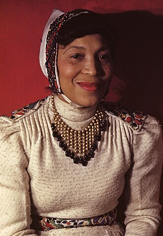
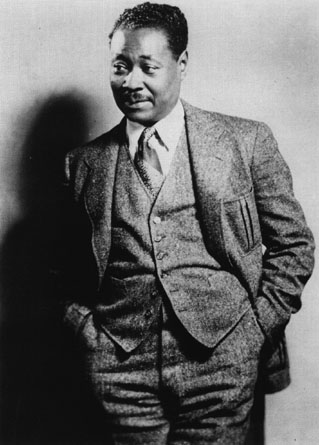

Langston Hughes was a famous poet from the Harlem Renaissance. His work highlighted the lives of poor Black Americans and their struggles.
He was born in Joplin, Missouri to a mixed-race family. He spent his Childhood and Kansas and went to school at Columbia University in New York.
After graduating, he spent time travelling all over the world, from Mexico to the Soviet Union and France.
He settled in Harlem and associated himself with other Harlem Rennaisance figures, like Zora Neale Hurston, Claude McKay, and Aaron Douglas.
His work focused on the black experience and he supported the racial consciousness of African-Americans, to unite them in struggles against racism.
List of some important works by Langston Hughes:
Excerpt from one of his poems, "Let America be America Again" :
| Picture | Description |
|---|---|
|  | Zora Neale Hurston (1891 - 1960) was a writer and anthropologist. She was a central figure in the Harlem Rennaisance, and spent much of her time conducting ethnographic research on Black communities in the South and Caribbean, including documenting one of the last survivors of the slave trade - Cudjoe Lewis. |
|  | Claude McKay (1890 - 1948) was a Jamaican-American writer and poet who made substantial contributions to the Harlem Rennaisance. His work highlighted the Black identity among average people and his stories were often set among communities in Jamaica and America. |
|
|
Aaron Douglas (1899 - 1979) was a painter and illustrator who highlighted societal problems of Black Americans in his work. He founded the art department at Fisk University, an HBCU, and his pieces are held in places like the National Gallery of Art. |
Created by Kailan Campbell